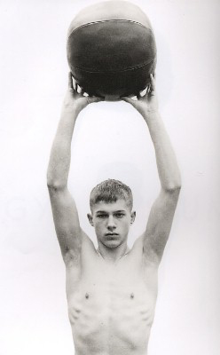
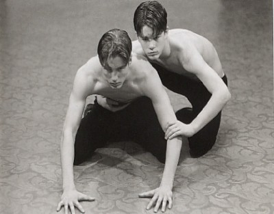
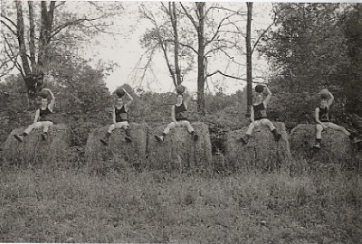
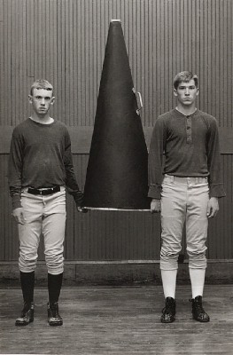

Luke Smalley, "Gymnasium"
by Richard Turnbull
Luke Smalley, “Gymnasium,” Wessel + O’Connor Gallery, 242 W.
26th St., New York, October 12-November 25, 2001
Luke Smalley, Gymnasium (Santa Fe, NM: Twin Palms Publishing, 2001)
|  |
Luke Smalley is a Pennsylvania-based photographer whose subject in his first
solo exhibition and book are male high school athletes. Smalley’s work
is not the stuff of celebratory small town photojournalism but rather an elaborately
crafted and posed body of photos whose participants, though real athletes (Smalley
found them in various Pennsylvania and Ohio high schools), act out a series
of scenarios using antique athletic equipment, much of it fashioned by Smalley
himself. The premise of the project is outlined in an uncredited text at the
beginning of the book version of Gymnasium, which extols the idealized athletic
boy at the expense of angst-ridden, academics-obsessed adolescents who spend
far too many hours brooding in their rooms. “It is the boys who have snap
and vim and energy, who have a plentiful supply of ‘ginger,’”
Smalley quotes (or writes himself, in which case his text is a masterful recreation
of what might be called the Boy Scout Handbook aesthetic), “that accomplish
results of importance...The boy who wants to be strong and rugged, who wishes
to grow up into a superb, manly man, and who uses his surplus energies and wholesome
games and in a temperate amount of study, will avoid without the slightest effort
all that is evil.”1
There are plenty of viewers who might athletically leap over the irony here
and suggest that it is precisely the kind of behavior learned on the playing
field and in the locker room that creates a specific kind of evil rather than
subverting it, but Smalley is having none of that. His boy athletes are sweet
looking, serene, confident, supremely unself-conscious. They pose in old football
helmets, on antique rowing machines, with cheerleaders’ megaphones, and
they wear old-style uniforms, wrestling singlets and lettered jerseys. All the
photos are in black and white; virtually all of the athletes gaze directly into
the camera; most are in sharp focus, though the occasional boy and some of the
backgrounds are rendered in a gauzy Pictorialist haze. The pictures seem designed
to summon nostalgia, an era of innocent athleticism when high school males did
not shoot one another and the presumed meaning of sport itself was still pure,
and Smalley’s photos are, unto themselves, beautiful objects fashioned
by a gifted photographic craftsman.
|  |
There are, of course, various traditions which can be invoked as a way of framing
Smalley’s work. The artifice on display here, that of consciously relocating
the subject in time and space, is deeply embedded in photographic history. Unlikely
as it may seem, the true progenitors of Smalley’s work are the constructed
tableaux of nineteenth century photographers like Oscar Rejlander and Henry
Peach Robinson, perhaps even the allegorical portraits Julia Margaret Cameron
made of friends and family in the 1860s and 70s.2 One can also cite
the more contemporary works of Philip-Lorca DiCorcia and Cindy Sherman, two
photographers (among many) who take as the subject of their photography questions
of constructed identity and the ambiguous nature of photographic “truth.”3
More obvious even to the casual observer is Smalley’s debt to a longstanding
and diverse tradition of homoerotic subject matter in photography. In this sense,
the photos in Gymnasium are derived from Wilhelm von Gloeden and Fred Holland
Day’s early twentieth century work and updated by way of Bruce Weber, though
divested of nudity and any overt sensuality along the way.4 The youngest
subject in Gymnasium, a buzz-cut boy wearing black trunks and nothing else,
could in fact have stepped from the frames of “Broken Noses,” Weber’s
1987 cinematic gaze at a boys’ boxing club in the Pacific Northwest. For
all Weber’s contrivance, though, for all the hair gel and moody lighting
and naked romping with dogs and each other, he allows his subjects a naturalism
that Smalley’s more narrowly defined athletes do not have. We know nothing
about them outside of their fabricated contexts; they are unnamed, the photos
themselves untitled, and the boys have been stripped of everything but their
bodies, their poses, their unmediated gaze at the lens.
|  |
Gymnasium is boy after boy, crouching, lifting, hurling, running, rowing, lunging,
in pairs, in trios, alone. These boys are physical paradigms all, embodiments
of body, for the most part unsmiling, willing participants in the recording
of body-glory. There are no depictions of athletes of color and a tacit nod
to contemporary gay aesthetics of beauty (no body hair to be seen on Smalley’s
athletes, no bad complexions, no one fat or misshapen or conventionally ugly).
Smalley seems most interested in documenting a nostalgic history of the primal
urge boys have to play games, to test themselves, to measure athletic prowess,
to achieve athletic success. There isn’t much about the thrill of victory
here, though the emotions of defeat are also all but absent. In one photo, a
boy sits alone on a throne-like chair, wearing white shorts, a pair of antique
cleats and a banner across his perfect bare chest that proclaims “FIRST.”
The boy’s face is blank; he sits like a prince unimpressed or even unaware
of his kingdom. In another photo, a quintet of boys sit on enormous rolled hay
bales, balancing basketballs on their heads with their left hands, their right
hands dangling between splayed legs. They do this not because they reenact some
forgotten ritual of gymnasium culture but because Smalley thought this would
make an interesting composition. (In a companion photo, the same quintet stands
on the hay bales and now balances the balls on their heads with their right
hands.) The expressions on the boys’ faces, though hard to read from a
distance, appear as uninflected as the seated boy with his banner. They are
plainly not thinking about artifice and the construction of nostalgia and the
homoerotic gaze; they are doing what Smalley told them to do, and that seems
enough.
|  |
The unasked question in Gymnasium is not necessarily one about the artist’s intention (which seems clear enough) or about the propriety of studying and documenting adolescent sexuality (however peripheral this is in Smalley’s photos). It is instead a question about fabricated identity and possibly fabricated desire. Smalley’s work taps into the twin grails of contemporary advertising culture, youth and beauty (and the longing for both). He aestheticizes his subjects, strips them of sweat, grime, blood and the smells of locker room and playing field, strips them as well of the pervasive sports-based and gym-class cruelty which presumably dominates the adolescent memories of most non-athletes. Smalley’s athletes are purified, in other words, in form but also in sensibility. This further distances us (and them) from the complicated contemporary reality of sports, from the troubling issues of adolescent sexual allure. These photos, because of the obvious inaccessibility of their subjects, create a kind of illicit (and unfulfillable) longing, an impossible desire which is paradoxically permitted only in the act of looking at the photos themselves. Are any of his high school athletes gay? Are any of them aware that the majority of the viewing audience for Smalley’s photos are likely to be gay men? Would they care if they knew? In the orderly and nostalgic world of Gymnasium, none of the answers seem to matter.